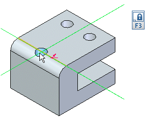
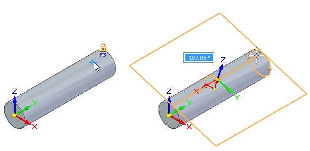

Plane locking
When placing a hole feature, you lock to a plane by pressing the F3 key, clicking the lock icon  while pausing the cursor over a plane, or when you place two hole occurrences on
the same face within the same instance of the command, the plane automatically locks.
while pausing the cursor over a plane, or when you place two hole occurrences on
the same face within the same instance of the command, the plane automatically locks.
Plane locking is helpful when placing multiple holes on a single face because all holes are placed with respect to the same plane regardless of where you drag the cursor. Once you lock to a plane, you can use edge references to more precisely define the hole location with dimensions.
When you lock to plane, the locked plane icon displays in the upper-right corner of the graphics window and planar alignment lines are displayed on the locked plane.

When placing a hole on a cylinder or cone, you can define a plane by clicking the lock icon. A dynamic tangent plane displays. You position the tangent plane, and then click. When you click, the plane locks.
